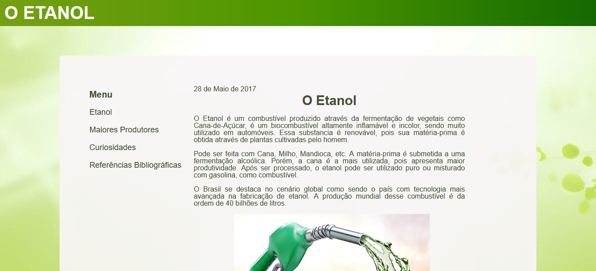
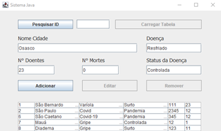
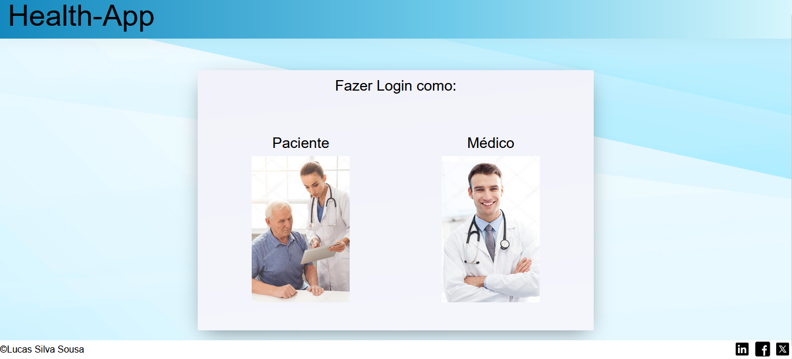

Nesta página vocês podem encontrar alguns de meus projetos:
Projetos Acadêmicos
APS - Etanol
Meu primeiro projeto no qual eu realizei em uma atividade prática supervisionada no 1° semestre universidade, aonde eu deveria criar uma página utilizando HTML e CSS de acordo com o tema do trabalho (no caso, Etanol).

APS - Sistema Java
Meu primeiro projeto em Back-End, aonde eu desenvolvi um sistema com a linguagem de programação Java, no qual eu insiro dados de várias cidades e de uma determinada doença, além de adicionar o número de doentes e mortos e definir se a doença está controlada, é um surto ou uma pandemia.

APS - Sistema de Agendamentos
Outro projeto acadêmico que eu fiz, um sistema de login de uma rede de atendimentos médicos que além do Front-End, também possui Back-end em sua estrutura, com as linguagens de programação MySql e PHP.

Projetos Pessoais
Salão da Te
Projeto de um site de salão que eu fiz para praticar, contendo 2 páginas, uma mostrando informações como endereço, horários, portfólio, etc. Enquanto outra contém uma área para agendar horários.

Conversor de Moedas
Projeto de um sistema conversor de moedas que eu fiz para praticar JavaScript, o usuário digita o valor em reais e o sistema converte para moedas como Dólar, Euro, etc.

Projetos Profissionais
APP Parques
Meu primeiro projeto profissional foi durante meu estágio na Secretaria do Verde e Meio-Ambiente, aonde eu deveria desenvolver uma versão estática do projeto App Parques que posteriormente se tornou o Web Parques.

WebParques
Versão final do projeto App Parques da Secretaria do Verde e Meio-Ambiente, que posteriormente se tornou o WebParques, projeto esse que usa o framework React.js e typescript.